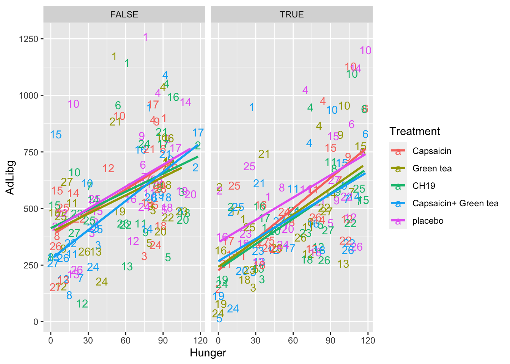
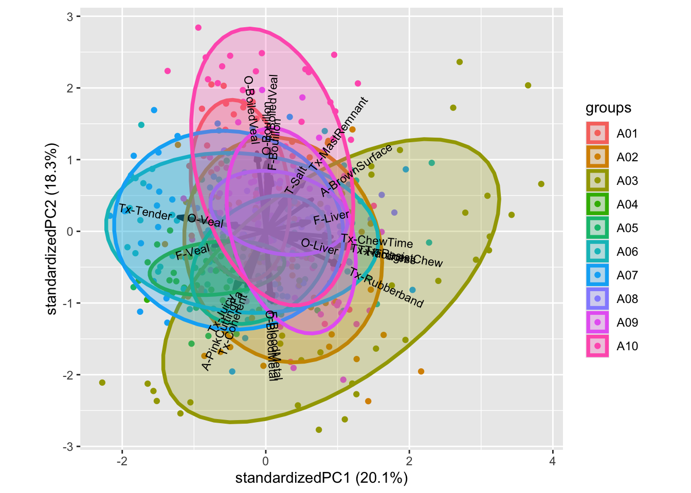

Chapter 11 Check All That Applies (CATA)
Check All That Apply (CATA) data is in its raw form binary indicating whether a judge finds a product to have the attribute (1) or not (0).
Usually, such data is organized in a matrix where each row corresponds to the evaluation of one product by one judge. And the coloumns are then the attributes.
Say you for instance have 26 judges/consummers and 4 products, and further that all products are evaluated by all judges once on 13 attributes. Your data matrix would then have 104 rows and 13 coloums (with responses) and additionally coloumns indicating judge, product, record id, date, etc.
11.1 An example from Beer profiling
Six different commercial beers from Danish craft brewers, evaluated by \(160\) consumers on a range of different questions:
- Background information: a range of questions, including appropriateness ratings for 27 sensory descriptors on a 7-points scale (e.g. how appropriate do you think it is for a beer to be bitter?). The two semantic anchors were 1 = not at all appropriate and 7 = extremely appropriate. This dataset is called beercata.
- Hedonics: Their liking/hedonic responses of the beer on a 7-point Likert scale (1-7). This dataset is called beerliking.
library(data4consumerscience)
library(tidyverse)
data("beercata")
beercata %>% head()## Consumer.ID Beer S_Flowers S_Beans S_Intense berries S_Caramel S_Nuts S_Savoury spices
## 1 a01 Wheat IPA 0 0 0 0 1 0
## 2 a02 Wheat IPA 0 0 0 0 0 0
## 3 a03 Wheat IPA 0 0 0 0 0 0
## 4 a04 Wheat IPA 0 1 0 0 0 1
## 5 a05 Wheat IPA 0 0 0 0 0 0
## 6 a06 Wheat IPA 0 0 0 0 0 0
## S_Dessert spices S_Regional spices S_Herbs S_Citrus fruit S_Berries S_Fruit S_Dried fruit S_Liquor
## 1 0 0 1 0 0 0 0 0
## 2 0 1 0 0 0 0 0 0
## 3 0 0 0 0 1 0 0 0
## 4 0 0 0 0 0 0 0 0
## 5 0 0 0 1 0 0 0 0
## 6 0 0 1 0 0 0 1 0
## S_Bitter S_Sparkling S_Refreshing S_Fruity S_Aromatic S_Pungent S_Still S_Smoked S_Foamy S_Sour S_Sweet
## 1 1 0 0 0 1 1 0 0 0 0 0
## 2 0 0 0 0 0 0 0 0 0 1 0
## 3 1 0 0 0 0 0 0 1 1 0 0
## 4 1 0 1 0 0 0 0 0 0 0 0
## 5 1 0 1 0 0 0 0 0 0 0 0
## 6 1 1 0 0 0 0 0 1 0 0 0
## S_Warming S_Vinous
## 1 0 0
## 2 0 0
## 3 0 0
## 4 0 0
## 5 0 0
## 6 0 0table(beercata$Beer) ##
## Brown Ale NY Lager Porse Bock Ravnsborg Red River Beer Wheat IPA
## 160 160 160 160 160 160length(unique(beercata$Consumer.ID))## [1] 16011.2 Two versions of the data
- RAW data with each row being responses from one evaluation
- Agglomerated to counts, with each row being one product
[Put in the pictures from Rinnan et al 2015]
The agglomerated version is computed by:
# Questions we want answer using these data
# - Are the products different / similar?
# - Which attributes drives discrimination?
# - Are there any judges who are really of?
beercatasum <- beercata %>%
gather(attrib, val, S_Flowers:S_Vinous) %>%
group_by(Beer,attrib) %>%
dplyr::summarize(n = sum(val)) %>%
spread(attrib,n)## `summarise()` has grouped output by 'Beer'. You can override using the `.groups` argument.beercatasum## # A tibble: 6 × 28
## # Groups: Beer [6]
## Beer S_Aro…¹ S_Beans S_Ber…² S_Bit…³ S_Car…⁴ S_Cit…⁵ S_Des…⁶ S_Dri…⁷ S_Flo…⁸ S_Foamy S_Fruit S_Fru…⁹
## <chr> <dbl> <dbl> <dbl> <dbl> <dbl> <dbl> <dbl> <dbl> <dbl> <dbl> <dbl> <dbl>
## 1 Brown Ale 57 54 6 63 52 10 13 21 4 27 11 22
## 2 NY Lager 37 10 5 69 16 30 20 6 46 27 15 45
## 3 Porse Bock 20 2 5 67 7 34 16 6 27 26 8 22
## 4 Ravnsborg… 52 25 6 71 35 11 19 14 17 16 11 26
## 5 River Beer 22 12 4 65 3 29 8 4 22 30 18 24
## 6 Wheat IPA 29 9 9 57 9 30 24 6 45 26 21 43
## # … with 15 more variables: S_Herbs <dbl>, `S_Intense berries` <dbl>, S_Liquor <dbl>, S_Nuts <dbl>,
## # S_Pungent <dbl>, S_Refreshing <dbl>, `S_Regional spices` <dbl>, `S_Savoury spices` <dbl>,
## # S_Smoked <dbl>, S_Sour <dbl>, S_Sparkling <dbl>, S_Still <dbl>, S_Sweet <dbl>, S_Vinous <dbl>,
## # S_Warming <dbl>, and abbreviated variable names ¹S_Aromatic, ²S_Berries, ³S_Bitter, ⁴S_Caramel,
## # ⁵`S_Citrus fruit`, ⁶`S_Dessert spices`, ⁷`S_Dried fruit`, ⁸S_Flowers, ⁹S_Fruity… and visualized by for instance a barplot.
# summary counts over attrobite
beercatasum %>%
gather(attrib, n, S_Flowers:S_Vinous) %>%
ggplot(data = ., aes(attrib,n, fill = Beer)) +
geom_bar(stat = 'identity', position = position_dodge()) +
coord_flip()
11.3 PCA
A PCA on the agglomerated counts, reveal the attributes associated with the individual products:
mdlPCA <- prcomp(beercatasum[,-1], scale. = T)
ggbiplot::ggbiplot(mdlPCA, labels = beercatasum$Beer)
The attributes Bean, Caramel, Warming, Aromatic etc is associated to the beer Brown ale, while Berrie, Dessert, Pungent, etc. is characteristic of Wheat IPA [Maybe add some more narrative]
11.4 Cochranes Q-test
Cochranes Q-test is a statistical test for the comparison of several products, where the response is binary, and there is repeated responses across several judges. We need a package (RVAideeeeMemoire).
For one response variable: S_Flowers
library(RVAideMemoire)## *** Package RVAideMemoire v 0.9-81-2 ***##
## Attaching package: 'RVAideMemoire'## The following object is masked from 'package:lme4':
##
## dummy## The following object is masked from 'package:broom':
##
## bootstrapm <- cochran.qtest(S_Flowers ~ Beer | Consumer.ID,
data = beercata)
m##
## Cochran's Q test
##
## data: S_Flowers by Beer, block = Consumer.ID
## Q = 63.252, df = 5, p-value = 2.581e-12
## alternative hypothesis: true difference in probabilities is not equal to 0
## sample estimates:
## proba in group <NA> <NA> <NA> <NA> <NA>
## 0.02500 0.28750 0.16875 0.10625 0.13750 0.28125The p.value is strongly significant, indicating that we cannot assumme the same level of S_Flower in all beers. I.e. the beers seems different based on this characteristics. This is in agreement with the barplot above, where S_Flower is high in NY Lager and really low for Brown ale.
11.4.1 Post hoc contrasts
As we observe differences based on this attribute, we pursue the question on which products sticks out? And are there products which are similar? This is done by pairwise comparisons:
library(rcompanion)
PT = pairwiseMcnemar(S_Flowers ~ Beer | Consumer.ID,
data = beercata,
test = "permutation",
method = "fdr",
digits = 3)
PT$Pairwise %>%
arrange(-abs(as.numeric(Z))) %>%
data.frame()## Comparison Z p.value p.adjust
## 1 Brown Ale - NY Lager = 0 -6.48 9.13e-11 1.37e-09
## 2 Brown Ale - Wheat IPA = 0 -5.86 4.71e-09 3.53e-08
## 3 Brown Ale - Porse Bock = 0 -4.27 1.95e-05 9.75e-05
## 4 NY Lager - Ravnsborg Red = 0 4.14 3.43e-05 1.29e-04
## 5 Ravnsborg Red - Wheat IPA = 0 -3.96 7.5e-05 2.25e-04
## 6 NY Lager - River Beer = 0 3.54 0.000402 8.48e-04
## 7 Brown Ale - River Beer = 0 -3.53 0.000415 8.48e-04
## 8 River Beer - Wheat IPA = 0 -3.51 0.000452 8.48e-04
## 9 Brown Ale - Ravnsborg Red = 0 -2.98 0.00286 4.77e-03
## 10 NY Lager - Porse Bock = 0 2.52 0.0118 1.77e-02
## 11 Porse Bock - Wheat IPA = 0 -2.36 0.0181 2.47e-02
## 12 Porse Bock - Ravnsborg Red = 0 1.54 0.123 1.54e-01
## 13 Porse Bock - River Beer = 0 0.845 0.398 4.26e-01
## 14 Ravnsborg Red - River Beer = 0 -0.845 0.398 4.26e-01
## 15 NY Lager - Wheat IPA = 0 0.135 0.893 8.93e-01The table is sorted with the most different pairs at the top, and the least different at the bottom. Hence most products are different, while Porse Bock and Ravnsborg Red are fairly alike.
11.4.2 For all Attributes
We use tidyverse and broom for this, but need a function capable of handling Cochranes Q-test outputs.
library(broom)
tidy.RVtest <- function(m){
r <- data.frame(statistic = m$statistic,df = m$parameter,
p.value= m$p.value,
method = m$method.test)
return(r)
}
tb_cochran <- beercata %>%
gather(attrib, val, S_Flowers:S_Vinous) %>%
group_by(attrib) %>%
do(cochran.qtest(val ~ Beer | Consumer.ID,
data = .) %>% tidy)
tb_cochran %>%
arrange(p.value) ## # A tibble: 27 × 5
## # Groups: attrib [27]
## attrib statistic df p.value method
## <chr> <dbl> <dbl> <dbl> <chr>
## 1 S_Beans 114. 5 7.19e-23 Cochran's Q test
## 2 S_Caramel 108. 5 1.08e-21 Cochran's Q test
## 3 S_Flowers 63.3 5 2.58e-12 Cochran's Q test
## 4 S_Aromatic 45.8 5 9.90e- 9 Cochran's Q test
## 5 S_Sweet 36.3 5 8.24e- 7 Cochran's Q test
## 6 S_Warming 35.9 5 1.01e- 6 Cochran's Q test
## 7 S_Smoked 33.9 5 2.47e- 6 Cochran's Q test
## 8 S_Liquor 33.9 5 2.55e- 6 Cochran's Q test
## 9 S_Citrus fruit 29.4 5 1.96e- 5 Cochran's Q test
## 10 S_Dried fruit 26.0 5 8.81e- 5 Cochran's Q test
## # … with 17 more rowsThis output indicates that S_Beans is the most discriminatory attribute, while S_Pungent is the least.
11.4.3 PLSDA
This needs more love.
library(caret)## Loading required package: lattice##
## Attaching package: 'caret'## The following object is masked from 'package:purrr':
##
## liftmdl <- plsda(data.frame(beercata[,3:29]),factor(beercata$Beer),ncomp = 3)
scores <- mdl$scores %>%
unclass %>%
as.data.frame %>%
cbind(beercata)
loadings <- mdl$loadings %>%
unclass %>%
as.data.frame %>%
rownames_to_column('attrib') %>%
mutate(attrib2 = substr(attrib,3,50)) # lets remove the S_
g1 <- ggplot(data = loadings, aes(`Comp 1`, `Comp 2`, label = attrib2)) +
# geom_point() +
geom_text()
g2 <- ggplot(data = scores, aes(`Comp 1`, `Comp 2`, color = Beer)) +
# geom_point() +
stat_ellipse(level = 0.5)
library(patchwork)
g1 + g2
# do multiple splithalfs
# INPUT: judge id. CATA, class, ncomp
X <- beercata[,3:29]
clss <- factor(beercata$Beer)
judge <- beercata$Consumer.ID
k <- 3
A <- 30
mdl0 <- plsda(X,clss,ncomp = k)
lds0 <- mdl0$loadings %>%
unclass %>%
as.data.frame %>%
rownames_to_column('attrib') %>%
gather(cmp,val0,-attrib)
unjudge <- unique(judge)
nindiv <- length(unjudge)
LOADS <- data.frame()
for (i in 1:A){
ic <- judge %in% sample(unjudge)[1:round(nindiv/2)]
mdlSH <- plsda(X[ic,],clss[ic],ncomp = k)
df_flip <- data.frame(sng = sign(diag(t(mdl0$loadings) %*% mdlSH$loadings))) %>%
rownames_to_column('cmp')
lds <- mdlSH$loadings %>%
unclass %>%
as.data.frame %>%
rownames_to_column('attrib') %>%
gather(cmp,val,-attrib) %>%
left_join(df_flip, by = 'cmp') %>%
mutate(SHiter = i,
val = val*sng)
LOADS <- bind_rows(LOADS,lds)
}
fc <- (1 / A)*((A - 1)/A)
sdloads <- LOADS %>%
left_join(lds0, by = c('attrib','cmp')) %>%
group_by(attrib,cmp) %>%
dplyr::summarise(sd = sum((val-val0)^2) *fc) %>%
mutate(cmp = paste('sd',cmp,sep = '')) %>%
spread(cmp,sd)## `summarise()` has grouped output by 'attrib'. You can override using the `.groups` argument.loadsSH <- lds0 %>%
spread(cmp,val0) %>%
left_join(sdloads, by = 'attrib')
library(ggforce)
ggplot(data = loadsSH, aes(x0 = `Comp 1`,y0 = `Comp 2`,a = `sdComp 1`,b = `sdComp 2`,angle = 0)) + geom_ellipse()11.5 Exerecise
Take 5-10 minutes to look at the publication to get an overview [hvilken publ?]
11.5.1 Exercise 1: PCA on consumer background
From this exercise you should be able to describe who your consumers are.
Make the data available:
data("beerdemo")Calculate a PCA model including the Variables 7 ( Interest in food ) to 39 ( App_Vinous ). Remember to standardize/scale the variables
mdlPCA <- prcomp(beerdemo[,7:39],scale. = T)Plot the scores and loadings in a biplot and look for groupings of the consumers in the scores.
Group and color according to the background information not used in the model (Gender, Age,..)
library(ggbiplot)
ggbiplot(mdlPCA, groups = beerdemo$Gender, ellipse = T)
Describe what you find.
11.5.2 Exercise 2: PCA on CATA counts
From this exercise you should be able to describe your samples (beers) from the CATA counts. Collated (summed) for each beer of CATA score from all consumers.
Setup the collated version as described above.
beercatasum <- beercata %>%
gather(attrib, ...Calculate a PCA model including all Variables and all Objects.
PCAmdl <- prcomp(beercatasum, scale. = T)Plot the scores and describe the groupings of the samples. Plot the loadings and describe the correlations between the variables.
ggbiplot(PCAmdl)Use this biplot to find out which samples are described by which words.
11.5.3 Exercise 3: PCA on liking
From this exercise you should be able to describe the liking of the beer samples and see how the consumers do this.
Calculate a PCA model including all Variables and all Objects.
include_these <- complete.cases(beerliking)
PCAliking <- prcomp(beerliking[include_these,-1], scale. = T)Plot a biplot or loading plot, and use the loadings and describe the correlations between the variables (liking of beers in this case).
ggbiplot(PCAliking)Plot the scores and describe the groupings of the samples by colouring the score plot according to the consumer background variables. Note that the 160 rows in both datasets match each-other, so we can glue the demo information directly onto the liking model. If that was not the case, matching using left_join() or inner_join() would be nessesary before analysis.
ggbiplot(PCAliking,groups = beerdemo$Age[include_these], ellipse = T)Any trends? For instance, how is liking related to the individual consumer diversity of beer (Beer types/month)?
… Some code to get all 7-scale demo information plots. You may want to export and view in a pdf viewer for zooming etc.
gall <- cbind(PCAliking$x[,1:2], beerdemo[include_these,]) %>%
gather(var,val,`Interest in food`:App_Vinous) %>%
ggplot(data = ., aes(PC1,PC2, color = factor(val))) +
geom_point() +
stat_ellipse() +
facet_wrap(~var)
ggsave(filename = 'anicebigfigure.pdf',gall, height = 20, width = 20)11.5.4 Exercise 4: PLS on CATA counts and liking
From this exercise you should be able to conclude what drives the liking of your samples (beers).
For each beer, the collated CATA counts is the predictors, and the averaged liking is the response.
likingsum <- beerliking %>%
gather(Beer, liking, -`Consumer ID`) %>%
group_by(Beer) %>%
dplyr::summarise(lik = mean(liking, na.rm = T))Check that the rows are ordered in the same way:
likingsum$beer## Warning: Unknown or uninitialised column: `beer`.## NULLbeercatasum$Beer## [1] "Brown Ale" "NY Lager" "Porse Bock" "Ravnsborg Red" "River Beer" "Wheat IPA"CATAlik <- list()
CATAlik$CATA <- scale(as.matrix(beercatasum[,-1]))
CATAlik$lik <- scale(likingsum$lik)
rownames(CATAlik$lik) <- rownames(CATAlik$CATA) <- beercatasum$BeerCalculate a PLS model where CATA features are predictors and liking is response for all Objects.
library(pls)##
## Attaching package: 'pls'## The following object is masked from 'package:caret':
##
## R2## The following object is masked from 'package:stats':
##
## loadingscatalik.pls <- plsr(lik ~ CATA, ncomp = 2, data = CATAlik, validation = "LOO")
corrplot(catalik.pls, labels = colnames(beercatasum)[-1])
biplot(catalik.pls)Plot the loadings and study which X variables are important for the liking score. Advanced: Plot the Regression coefficients (scaled) and try to interpret the meaning of this plot (Hint: use your findings from the loadings plot).
11.5.5 Exercise 5: Mixed modelling on the liking
Dataset: Beer_XYZmatrix.xlsx, sheet “Z and Y liking” Import the datasheet in to R Studio. Check to see if all variables have the correct description/denomination (factor, numerical etc.) Are there any significant product differences for the liking? If so, what does the Tukey tell us? How does this fit with what you have done in the PCA/PLS exercises. Is the liking in general affected by the age, gender, household size or beer knowledge? What is the effect? Try to think of a plot that can show the significant differences. Do men and women score the samples significantly different in liking? Calculate the sample/gender differences in averages, try to use Pivot Tables in Excel.
11.5.6 Exercise 6: Comparing CATA binary data and counts
Dataset: Beer_XYZmatrix.xlsx, sheets “X CATA collated, counts” and “Z + Y + X unfolded” If time… Calculate two PCA models: one on the X unfolded matrix (CATA answers in binary codes, more columns and you just choose the ones you need) and one on the CATA counts. Compare the outcome of the two models. Evaluate explained variance Evaluate loadings plots Is this expected when looking at counts and “raw” data What type of information is lost by looking at the CATA counts?
11.5.7 Exercise 7: Cochran’s Q test on CATA binary data
Dataset: Beer_XYZmatrix.xlsx, sheet “X unfolded”
If time… Import the datasheet in to R Studio using the CSV format (save the file as CSV in Excel). Choose 4 relevant CATA attributes (based on your previous results today) to make a Cochran’s Q test for, comment on the results (i.e. the sample differences).